3. Put the red fruit-shaped object in the light blue tray.

Each selected frame is scored against its supplied next-subtask instruction using up to eight selected frames from the current instruction segment. Images are resized to a 240-pixel short side. A new instruction resets the context.
Instructions are draft visual annotations. November 11 recordings have annotated destination conflicts. Scores are model predictions. No human success labels were supplied for accuracy measurement.

Each panel shows one instruction segment. Lettered markers on the plot match the selected head-camera images below it; the lines include every scored frame in that segment.
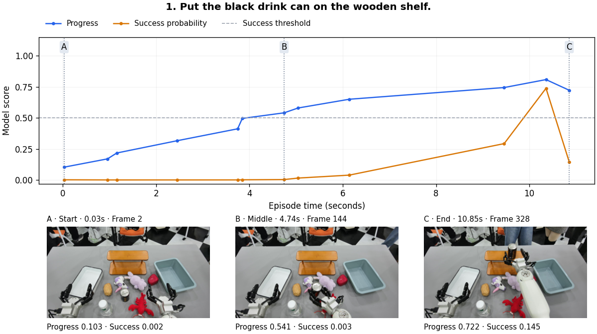
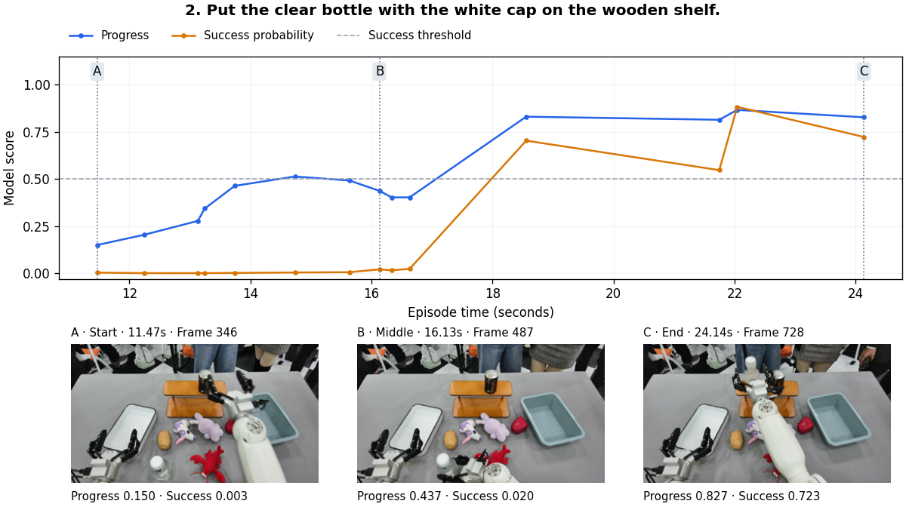
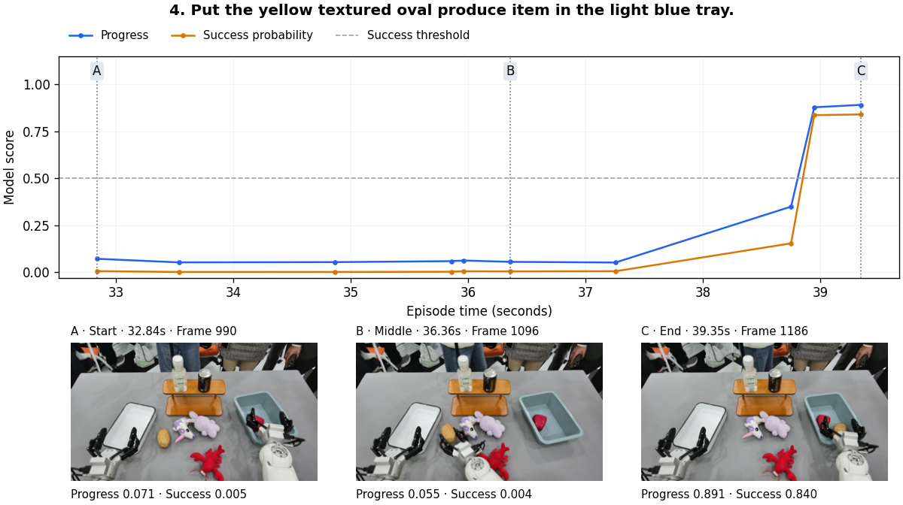

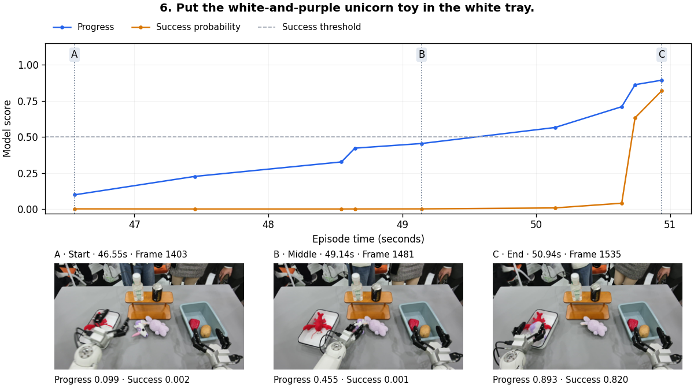


| Frame / time | Head camera | Instruction and review notes | Progress / success |
|---|---|---|---|
| 2 0.03s |  | Put the black drink can on the wooden shelf. | 0.103 / 0.002 |
| 30 0.96s |  | Put the black drink can on the wooden shelf. | 0.170 / 0.000 |
| 36 1.16s |  | Put the black drink can on the wooden shelf. | 0.217 / 0.000 |
| 75 2.45s |  | Put the black drink can on the wooden shelf. | 0.316 / 0.000 |
| 114 3.75s |  | Put the black drink can on the wooden shelf. | 0.412 / 0.001 |
| 117 3.85s |  | Put the black drink can on the wooden shelf. | 0.496 / 0.002 |
| 144 4.74s |  | Put the black drink can on the wooden shelf. | 0.541 / 0.003 |
| 153 5.04s |  | Put the black drink can on the wooden shelf. | 0.580 / 0.015 |
| 186 6.14s |  | Put the black drink can on the wooden shelf. | 0.650 / 0.039 |
| 286 9.46s |  | Put the black drink can on the wooden shelf. | 0.744 / 0.293 |
| 313 10.36s |  | Put the black drink can on the wooden shelf. | 0.808 / 0.738 |
| 328 10.85s |  | Put the black drink can on the wooden shelf. Task boundary: confirm release and next target in the original head/wrist images. | 0.722 / 0.145 |
| 346 11.47s |  | Put the clear bottle with the white cap on the wooden shelf. Task boundary: confirm release and next target in the original head/wrist images. | 0.150 / 0.003 |
| 370 12.25s |  | Put the clear bottle with the white cap on the wooden shelf. | 0.204 / 0.001 |
| 396 13.13s |  | Put the clear bottle with the white cap on the wooden shelf. | 0.278 / 0.000 |
| 400 13.24s |  | Put the clear bottle with the white cap on the wooden shelf. | 0.343 / 0.000 |
| 415 13.74s |  | Put the clear bottle with the white cap on the wooden shelf. | 0.464 / 0.001 |
| 445 14.74s |  | Put the clear bottle with the white cap on the wooden shelf. | 0.513 / 0.004 |
| 472 15.64s |  | Put the clear bottle with the white cap on the wooden shelf. | 0.492 / 0.005 |
| 487 16.13s |  | Put the clear bottle with the white cap on the wooden shelf. | 0.437 / 0.020 |
| 493 16.33s |  | Put the clear bottle with the white cap on the wooden shelf. | 0.402 / 0.015 |
| 502 16.63s |  | Put the clear bottle with the white cap on the wooden shelf. | 0.402 / 0.023 |
| 560 18.56s |  | Put the clear bottle with the white cap on the wooden shelf. | 0.830 / 0.703 |
| 656 21.75s |  | Put the clear bottle with the white cap on the wooden shelf. | 0.814 / 0.547 |
| 665 22.04s |  | Put the clear bottle with the white cap on the wooden shelf. | 0.866 / 0.883 |
| 728 24.14s |  | Put the clear bottle with the white cap on the wooden shelf. Task boundary: confirm release and next target in the original head/wrist images. | 0.827 / 0.723 |
| 743 24.63s |  | Put the red fruit-shaped object in the light blue tray. Task boundary: confirm release and next target in the original head/wrist images. | 0.155 / 0.003 |
| 770 25.53s |  | Put the red fruit-shaped object in the light blue tray. | 0.211 / 0.001 |
| 789 26.16s |  | Put the red fruit-shaped object in the light blue tray. | 0.313 / 0.000 |
| 810 26.86s |  | Put the red fruit-shaped object in the light blue tray. | 0.422 / 0.001 |
| 819 27.16s |  | Put the red fruit-shaped object in the light blue tray. | 0.490 / 0.002 |
| 825 27.36s |  | Put the red fruit-shaped object in the light blue tray. | 0.485 / 0.002 |
| 891 29.55s |  | Put the red fruit-shaped object in the light blue tray. | 0.488 / 0.003 |
| 894 29.65s |  | Put the red fruit-shaped object in the light blue tray. | 0.430 / 0.008 |
| 909 30.15s |  | Put the red fruit-shaped object in the light blue tray. | 0.441 / 0.012 |
| 936 31.04s |  | Put the red fruit-shaped object in the light blue tray. | 0.763 / 0.379 |
| 963 31.94s |  | Put the red fruit-shaped object in the light blue tray. | 0.867 / 0.895 |
| 969 32.15s |  | Put the red fruit-shaped object in the light blue tray. | 0.876 / 0.902 |
| 978 32.44s |  | Put the red fruit-shaped object in the light blue tray. Task boundary: confirm release and next target in the original head/wrist images. | 0.905 / 0.930 |
| 990 32.84s |  | Put the yellow textured oval produce item in the light blue tray. Task boundary: confirm release and next target in the original head/wrist images. | 0.071 / 0.005 |
| 1011 33.53s |  | Put the yellow textured oval produce item in the light blue tray. | 0.052 / 0.001 |
| 1051 34.86s |  | Put the yellow textured oval produce item in the light blue tray. | 0.053 / 0.001 |
| 1081 35.86s |  | Put the yellow textured oval produce item in the light blue tray. | 0.058 / 0.002 |
| 1084 35.96s |  | Put the yellow textured oval produce item in the light blue tray. | 0.062 / 0.004 |
| 1096 36.36s |  | Put the yellow textured oval produce item in the light blue tray. | 0.055 / 0.004 |
| 1123 37.25s |  | Put the yellow textured oval produce item in the light blue tray. | 0.051 / 0.005 |
| 1168 38.75s |  | Put the yellow textured oval produce item in the light blue tray. | 0.349 / 0.153 |
| 1174 38.95s |  | Put the yellow textured oval produce item in the light blue tray. | 0.878 / 0.836 |
| 1186 39.35s |  | Put the yellow textured oval produce item in the light blue tray. Task boundary: confirm release and next target in the original head/wrist images. | 0.891 / 0.840 |
| 1195 39.65s |  | Put the red lobster toy in the white tray. Task boundary: confirm release and next target in the original head/wrist images. | 0.154 / 0.001 |
| 1204 39.94s |  | Put the red lobster toy in the white tray. | 0.250 / 0.000 |
| 1222 40.54s |  | Put the red lobster toy in the white tray. | 0.310 / 0.000 |
| 1225 40.64s |  | Put the red lobster toy in the white tray. | 0.362 / 0.000 |
| 1273 42.24s |  | Put the red lobster toy in the white tray. | 0.405 / 0.001 |
| 1276 42.34s |  | Put the red lobster toy in the white tray. | 0.474 / 0.002 |
| 1291 42.83s |  | Put the red lobster toy in the white tray. | 0.519 / 0.004 |
| 1294 42.93s |  | Put the red lobster toy in the white tray. | 0.545 / 0.028 |
| 1309 43.43s |  | Put the red lobster toy in the white tray. | 0.560 / 0.039 |
| 1318 43.73s |  | Put the red lobster toy in the white tray. | 0.572 / 0.034 |
| 1337 44.36s |  | Put the red lobster toy in the white tray. | 0.643 / 0.075 |
| 1361 45.16s |  | Put the red lobster toy in the white tray. | 0.806 / 0.645 |
| 1370 45.46s |  | Put the red lobster toy in the white tray. | 0.827 / 0.738 |
| 1376 45.66s |  | Put the red lobster toy in the white tray. | 0.885 / 0.887 |
| 1388 46.05s |  | Put the red lobster toy in the white tray. Task boundary: confirm release and next target in the original head/wrist images. | 0.899 / 0.934 |
| 1403 46.55s |  | Put the white-and-purple unicorn toy in the white tray. Task boundary: confirm release and next target in the original head/wrist images. | 0.099 / 0.002 |
| 1430 47.45s |  | Put the white-and-purple unicorn toy in the white tray. | 0.226 / 0.000 |
| 1463 48.55s |  | Put the white-and-purple unicorn toy in the white tray. | 0.327 / 0.000 |
| 1466 48.65s |  | Put the white-and-purple unicorn toy in the white tray. | 0.422 / 0.001 |
| 1481 49.14s |  | Put the white-and-purple unicorn toy in the white tray. | 0.455 / 0.001 |
| 1511 50.14s |  | Put the white-and-purple unicorn toy in the white tray. | 0.565 / 0.008 |
| 1526 50.64s |  | Put the white-and-purple unicorn toy in the white tray. | 0.710 / 0.041 |
| 1529 50.74s |  | Put the white-and-purple unicorn toy in the white tray. | 0.862 / 0.633 |
| 1535 50.94s |  | Put the white-and-purple unicorn toy in the white tray. Task boundary: confirm release and next target in the original head/wrist images. | 0.893 / 0.820 |
| 1541 51.14s |  | Put the lavender rabbit toy in the white tray. Task boundary: confirm release and next target in the original head/wrist images. | 0.120 / 0.002 |
| 1595 52.93s |  | Put the lavender rabbit toy in the white tray. | 0.312 / 0.001 |
| 1614 53.56s |  | Put the lavender rabbit toy in the white tray. | 0.411 / 0.001 |
| 1620 53.76s |  | Put the lavender rabbit toy in the white tray. | 0.473 / 0.001 |
| 1644 54.56s |  | Put the lavender rabbit toy in the white tray. | 0.469 / 0.001 |
| 1662 55.16s |  | Put the lavender rabbit toy in the white tray. | 0.618 / 0.008 |
| 1695 56.25s |  | Put the lavender rabbit toy in the white tray. | 0.833 / 0.473 |
| 1701 56.45s |  | Put the lavender rabbit toy in the white tray. | 0.938 / 0.965 |
| 1710 56.75s |  | Put the lavender rabbit toy in the white tray. Task boundary: confirm release and next target in the original head/wrist images. | 0.924 / 0.930 |
| 1719 57.05s |  | Verify that the drinks are on the wooden shelf, the produce is in the light blue tray, and the toys are in the white tray. Task boundary: confirm release and next target in the original head/wrist images.; Visible object sorting appears complete; verify support and release before declaring completion. | 0.126 / 0.008 |
| 1731 57.45s |  | Verify that the drinks are on the wooden shelf, the produce is in the light blue tray, and the toys are in the white tray. Visible object sorting appears complete; verify support and release before declaring completion. | 0.238 / 0.001 |

Each panel shows one instruction segment. Lettered markers on the plot match the selected head-camera images below it; the lines include every scored frame in that segment.


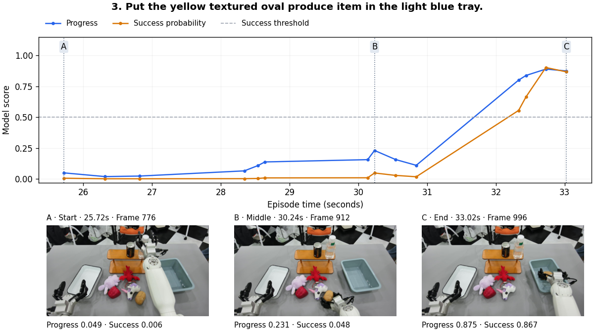

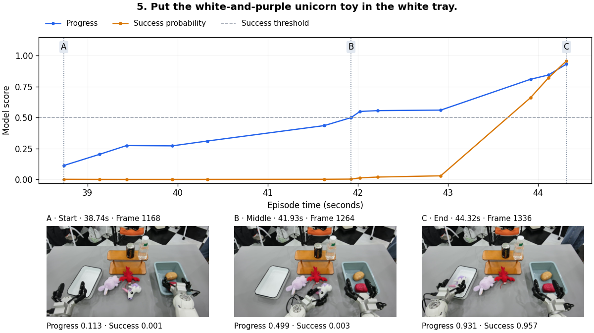
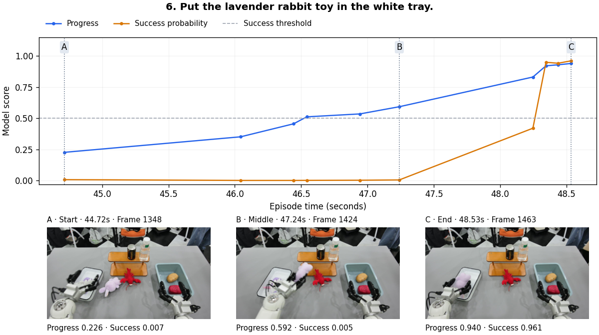


| Frame / time | Head camera | Instruction and review notes | Progress / success |
|---|---|---|---|
| 2 0.01s |  | Put the black drink can on the wooden shelf. | 0.091 / 0.002 |
| 39 1.24s |  | Put the black drink can on the wooden shelf. | 0.237 / 0.000 |
| 42 1.34s |  | Put the black drink can on the wooden shelf. | 0.354 / 0.000 |
| 48 1.54s |  | Put the black drink can on the wooden shelf. | 0.371 / 0.001 |
| 51 1.64s |  | Put the black drink can on the wooden shelf. | 0.317 / 0.001 |
| 63 2.04s |  | Put the black drink can on the wooden shelf. | 0.364 / 0.001 |
| 108 3.54s |  | Put the black drink can on the wooden shelf. | 0.339 / 0.001 |
| 126 4.13s |  | Put the black drink can on the wooden shelf. | 0.484 / 0.017 |
| 132 4.33s |  | Put the black drink can on the wooden shelf. | 0.578 / 0.036 |
| 174 5.73s |  | Put the black drink can on the wooden shelf. | 0.770 / 0.375 |
| 274 9.05s |  | Put the black drink can on the wooden shelf. | 0.781 / 0.459 |
| 280 9.25s |  | Put the black drink can on the wooden shelf. | 0.788 / 0.539 |
| 307 10.14s |  | Put the black drink can on the wooden shelf. | 0.809 / 0.684 |
| 310 10.24s |  | Put the black drink can on the wooden shelf. Task boundary: confirm release and next target in the original head/wrist images. | 0.769 / 0.398 |
| 337 11.14s |  | Put the clear bottle with the white cap on the wooden shelf. Task boundary: confirm release and next target in the original head/wrist images. | 0.180 / 0.005 |
| 340 11.24s |  | Put the clear bottle with the white cap on the wooden shelf. | 0.237 / 0.000 |
| 385 12.73s |  | Put the clear bottle with the white cap on the wooden shelf. | 0.329 / 0.000 |
| 400 13.23s |  | Put the clear bottle with the white cap on the wooden shelf. | 0.434 / 0.001 |
| 418 13.83s |  | Put the clear bottle with the white cap on the wooden shelf. | 0.471 / 0.002 |
| 442 14.63s |  | Put the clear bottle with the white cap on the wooden shelf. | 0.524 / 0.003 |
| 448 14.83s |  | Put the clear bottle with the white cap on the wooden shelf. | 0.553 / 0.007 |
| 451 14.93s |  | Put the clear bottle with the white cap on the wooden shelf. | 0.512 / 0.022 |
| 460 15.22s |  | Put the clear bottle with the white cap on the wooden shelf. | 0.518 / 0.017 |
| 481 15.92s |  | Put the clear bottle with the white cap on the wooden shelf. | 0.623 / 0.038 |
| 502 16.62s |  | Put the clear bottle with the white cap on the wooden shelf. | 0.767 / 0.504 |
| 526 17.42s |  | Put the clear bottle with the white cap on the wooden shelf. | 0.701 / 0.101 |
| 529 17.52s |  | Put the clear bottle with the white cap on the wooden shelf. | 0.802 / 0.715 |
| 545 18.05s |  | Put the clear bottle with the white cap on the wooden shelf. | 0.800 / 0.723 |
| 563 18.64s |  | Put the clear bottle with the white cap on the wooden shelf. | 0.785 / 0.586 |
| 581 19.24s |  | Put the clear bottle with the white cap on the wooden shelf. | 0.831 / 0.730 |
| 605 20.04s |  | Put the clear bottle with the white cap on the wooden shelf. | 0.769 / 0.498 |
| 665 22.03s |  | Put the clear bottle with the white cap on the wooden shelf. | 0.753 / 0.432 |
| 701 23.23s |  | Put the clear bottle with the white cap on the wooden shelf. Task boundary: confirm release and next target in the original head/wrist images. | 0.766 / 0.504 |
| 776 25.72s |  | Put the yellow textured oval produce item in the light blue tray. Task boundary: confirm release and next target in the original head/wrist images. | 0.049 / 0.006 |
| 794 26.32s |  | Put the yellow textured oval produce item in the light blue tray. | 0.019 / 0.001 |
| 809 26.82s |  | Put the yellow textured oval produce item in the light blue tray. | 0.023 / 0.001 |
| 855 28.34s |  | Put the yellow textured oval produce item in the light blue tray. | 0.065 / 0.002 |
| 861 28.54s |  | Put the yellow textured oval produce item in the light blue tray. | 0.108 / 0.004 |
| 864 28.64s |  | Put the yellow textured oval produce item in the light blue tray. | 0.138 / 0.008 |
| 909 30.14s |  | Put the yellow textured oval produce item in the light blue tray. | 0.156 / 0.009 |
| 912 30.24s |  | Put the yellow textured oval produce item in the light blue tray. | 0.231 / 0.048 |
| 921 30.54s |  | Put the yellow textured oval produce item in the light blue tray. | 0.157 / 0.028 |
| 930 30.84s |  | Put the yellow textured oval produce item in the light blue tray. | 0.110 / 0.017 |
| 975 32.33s |  | Put the yellow textured oval produce item in the light blue tray. | 0.800 / 0.555 |
| 978 32.44s |  | Put the yellow textured oval produce item in the light blue tray. | 0.838 / 0.664 |
| 987 32.73s |  | Put the yellow textured oval produce item in the light blue tray. | 0.890 / 0.902 |
| 996 33.02s |  | Put the yellow textured oval produce item in the light blue tray. Task boundary: confirm release and next target in the original head/wrist images. | 0.875 / 0.867 |
| 1011 33.52s |  | Put the red fruit-shaped object in the light blue tray. Task boundary: confirm release and next target in the original head/wrist images. | 0.121 / 0.003 |
| 1044 34.62s |  | Put the red fruit-shaped object in the light blue tray. | 0.278 / 0.001 |
| 1074 35.62s |  | Put the red fruit-shaped object in the light blue tray. | 0.378 / 0.001 |
| 1086 36.01s |  | Put the red fruit-shaped object in the light blue tray. | 0.427 / 0.001 |
| 1089 36.11s |  | Put the red fruit-shaped object in the light blue tray. | 0.433 / 0.002 |
| 1096 36.35s |  | Put the red fruit-shaped object in the light blue tray. | 0.421 / 0.003 |
| 1123 37.24s |  | Put the red fruit-shaped object in the light blue tray. | 0.734 / 0.043 |
| 1156 38.34s |  | Put the red fruit-shaped object in the light blue tray. | 0.866 / 0.875 |
| 1159 38.44s |  | Put the red fruit-shaped object in the light blue tray. | 0.905 / 0.949 |
| 1162 38.54s |  | Put the red fruit-shaped object in the light blue tray. Task boundary: confirm release and next target in the original head/wrist images. | 0.905 / 0.926 |
| 1168 38.74s |  | Put the white-and-purple unicorn toy in the white tray. Task boundary: confirm release and next target in the original head/wrist images. | 0.113 / 0.001 |
| 1180 39.14s |  | Put the white-and-purple unicorn toy in the white tray. | 0.203 / 0.001 |
| 1189 39.44s |  | Put the white-and-purple unicorn toy in the white tray. | 0.274 / 0.000 |
| 1204 39.94s |  | Put the white-and-purple unicorn toy in the white tray. | 0.271 / 0.000 |
| 1216 40.33s |  | Put the white-and-purple unicorn toy in the white tray. | 0.311 / 0.001 |
| 1255 41.63s |  | Put the white-and-purple unicorn toy in the white tray. | 0.435 / 0.001 |
| 1264 41.93s |  | Put the white-and-purple unicorn toy in the white tray. | 0.499 / 0.003 |
| 1267 42.03s |  | Put the white-and-purple unicorn toy in the white tray. | 0.549 / 0.013 |
| 1273 42.22s |  | Put the white-and-purple unicorn toy in the white tray. | 0.556 / 0.019 |
| 1294 42.92s |  | Put the white-and-purple unicorn toy in the white tray. | 0.560 / 0.029 |
| 1324 43.92s |  | Put the white-and-purple unicorn toy in the white tray. | 0.809 / 0.660 |
| 1330 44.12s |  | Put the white-and-purple unicorn toy in the white tray. | 0.844 / 0.820 |
| 1336 44.32s |  | Put the white-and-purple unicorn toy in the white tray. Task boundary: confirm release and next target in the original head/wrist images. | 0.931 / 0.957 |
| 1348 44.72s |  | Put the lavender rabbit toy in the white tray. Task boundary: confirm release and next target in the original head/wrist images. | 0.226 / 0.007 |
| 1388 46.04s |  | Put the lavender rabbit toy in the white tray. | 0.351 / 0.001 |
| 1400 46.44s |  | Put the lavender rabbit toy in the white tray. | 0.455 / 0.001 |
| 1403 46.54s |  | Put the lavender rabbit toy in the white tray. | 0.511 / 0.001 |
| 1415 46.94s |  | Put the lavender rabbit toy in the white tray. | 0.535 / 0.002 |
| 1424 47.24s |  | Put the lavender rabbit toy in the white tray. | 0.592 / 0.005 |
| 1454 48.25s |  | Put the lavender rabbit toy in the white tray. | 0.831 / 0.420 |
| 1457 48.35s |  | Put the lavender rabbit toy in the white tray. | 0.921 / 0.949 |
| 1460 48.44s |  | Put the lavender rabbit toy in the white tray. | 0.929 / 0.941 |
| 1463 48.53s |  | Put the lavender rabbit toy in the white tray. Task boundary: confirm release and next target in the original head/wrist images. | 0.940 / 0.961 |
| 1487 49.34s |  | Put the red lobster toy in the white tray. Task boundary: confirm release and next target in the original head/wrist images. | 0.131 / 0.001 |
| 1517 50.33s |  | Put the red lobster toy in the white tray. | 0.265 / 0.000 |
| 1556 51.62s |  | Put the red lobster toy in the white tray. | 0.358 / 0.000 |
| 1568 52.02s |  | Put the red lobster toy in the white tray. | 0.434 / 0.001 |
| 1577 52.32s |  | Put the red lobster toy in the white tray. | 0.481 / 0.002 |
| 1622 53.82s |  | Put the red lobster toy in the white tray. | 0.666 / 0.029 |
| 1653 54.85s |  | Put the red lobster toy in the white tray. | 0.831 / 0.629 |
| 1658 55.03s |  | Put the red lobster toy in the white tray. | 0.926 / 0.930 |
| 1662 55.15s |  | Put the red lobster toy in the white tray. | 0.914 / 0.906 |
| 1665 55.24s |  | Put the red lobster toy in the white tray. | 0.867 / 0.828 |
| 1668 55.35s |  | Put the red lobster toy in the white tray. Task boundary: confirm release and next target in the original head/wrist images. | 0.868 / 0.812 |
| 1701 56.44s |  | Verify that the drinks are on the wooden shelf, the produce is in the light blue tray, and the toys are in the white tray. Task boundary: confirm release and next target in the original head/wrist images.; Visible object sorting appears complete; verify support and release before declaring completion. | 0.224 / 0.012 |
| 1716 56.94s |  | Verify that the drinks are on the wooden shelf, the produce is in the light blue tray, and the toys are in the white tray. Visible object sorting appears complete; verify support and release before declaring completion. | 0.285 / 0.001 |
| 1719 57.04s |  | Verify that the drinks are on the wooden shelf, the produce is in the light blue tray, and the toys are in the white tray. Visible object sorting appears complete; verify support and release before declaring completion. | 0.333 / 0.001 |
| 1725 57.24s |  | Verify that the drinks are on the wooden shelf, the produce is in the light blue tray, and the toys are in the white tray. Visible object sorting appears complete; verify support and release before declaring completion. | 0.341 / 0.001 |

Each panel shows one instruction segment. Lettered markers on the plot match the selected head-camera images below it; the lines include every scored frame in that segment.
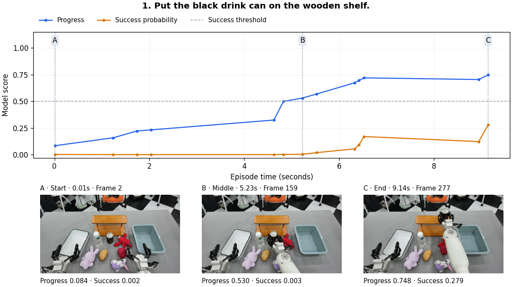

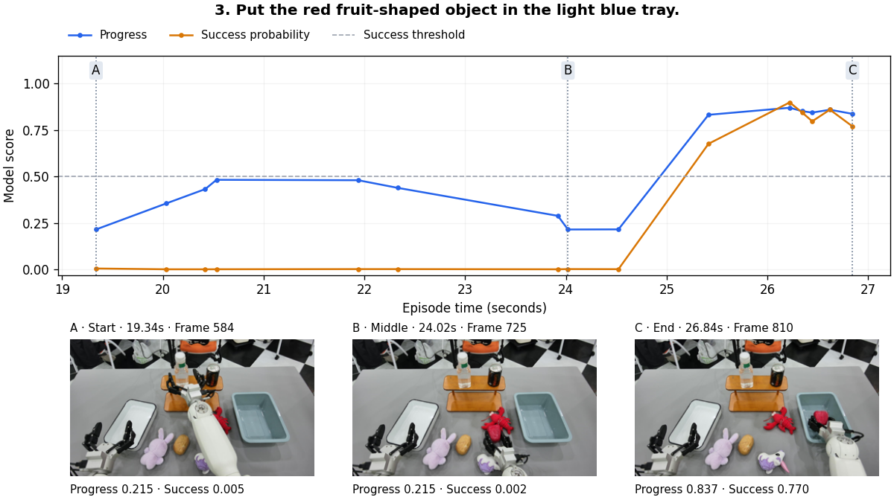

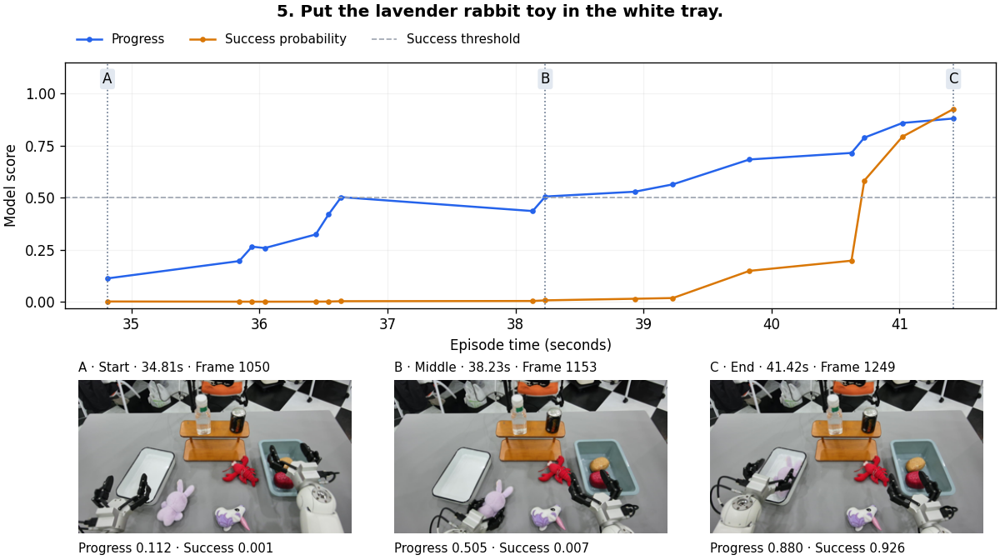
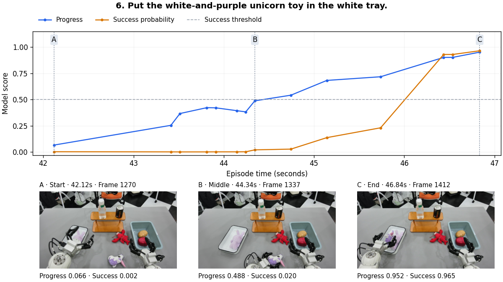
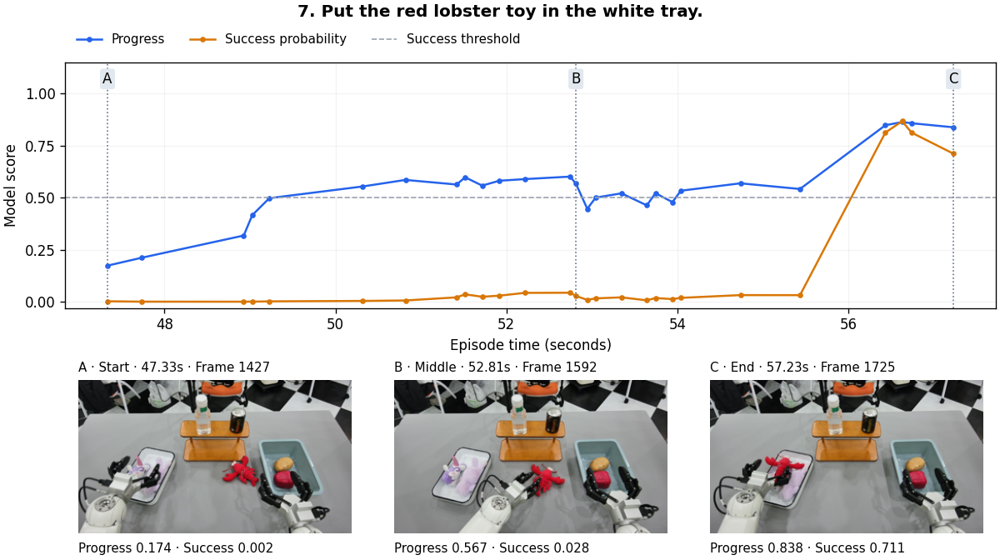
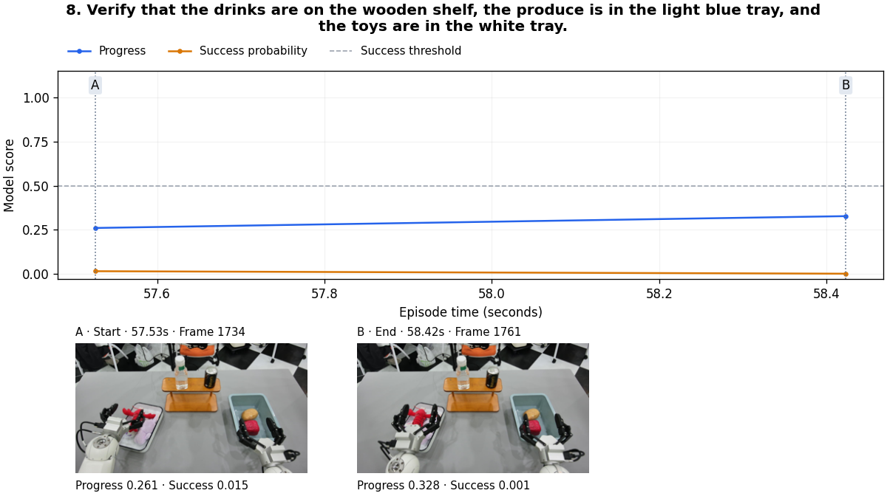
| Frame / time | Head camera | Instruction and review notes | Progress / success |
|---|---|---|---|
| 2 0.01s |  | Put the black drink can on the wooden shelf. | 0.084 / 0.002 |
| 39 1.24s |  | Put the black drink can on the wooden shelf. | 0.158 / 0.001 |
| 54 1.74s |  | Put the black drink can on the wooden shelf. | 0.222 / 0.000 |
| 63 2.04s |  | Put the black drink can on the wooden shelf. | 0.232 / 0.000 |
| 141 4.63s |  | Put the black drink can on the wooden shelf. | 0.324 / 0.001 |
| 147 4.83s |  | Put the black drink can on the wooden shelf. | 0.499 / 0.002 |
| 159 5.23s |  | Put the black drink can on the wooden shelf. | 0.530 / 0.003 |
| 168 5.53s |  | Put the black drink can on the wooden shelf. | 0.568 / 0.019 |
| 192 6.32s |  | Put the black drink can on the wooden shelf. | 0.673 / 0.054 |
| 195 6.42s |  | Put the black drink can on the wooden shelf. | 0.695 / 0.091 |
| 198 6.52s |  | Put the black drink can on the wooden shelf. | 0.720 / 0.170 |
| 271 8.94s |  | Put the black drink can on the wooden shelf. | 0.704 / 0.123 |
| 277 9.14s |  | Put the black drink can on the wooden shelf. Task boundary: confirm release and next target in the original head/wrist images. | 0.748 / 0.279 |
| 307 10.14s |  | Put the clear bottle with the white cap on the wooden shelf. Task boundary: confirm release and next target in the original head/wrist images. | 0.244 / 0.007 |
| 316 10.44s |  | Put the clear bottle with the white cap on the wooden shelf. | 0.253 / 0.001 |
| 385 12.73s |  | Put the clear bottle with the white cap on the wooden shelf. | 0.355 / 0.001 |
| 415 13.74s |  | Put the clear bottle with the white cap on the wooden shelf. | 0.439 / 0.001 |
| 418 13.83s |  | Put the clear bottle with the white cap on the wooden shelf. | 0.549 / 0.004 |
| 427 14.12s |  | Put the clear bottle with the white cap on the wooden shelf. | 0.594 / 0.008 |
| 460 15.22s |  | Put the clear bottle with the white cap on the wooden shelf. | 0.801 / 0.264 |
| 533 17.65s |  | Put the clear bottle with the white cap on the wooden shelf. | 0.853 / 0.867 |
| 542 17.94s |  | Put the clear bottle with the white cap on the wooden shelf. Task boundary: confirm release and next target in the original head/wrist images. | 0.864 / 0.867 |
| 584 19.34s |  | Put the red fruit-shaped object in the light blue tray. Task boundary: confirm release and next target in the original head/wrist images. | 0.215 / 0.005 |
| 605 20.03s |  | Put the red fruit-shaped object in the light blue tray. | 0.355 / 0.001 |
| 616 20.42s |  | Put the red fruit-shaped object in the light blue tray. | 0.432 / 0.001 |
| 620 20.53s |  | Put the red fruit-shaped object in the light blue tray. | 0.482 / 0.001 |
| 662 21.94s |  | Put the red fruit-shaped object in the light blue tray. | 0.480 / 0.002 |
| 674 22.33s |  | Put the red fruit-shaped object in the light blue tray. | 0.439 / 0.002 |
| 722 23.92s |  | Put the red fruit-shaped object in the light blue tray. | 0.288 / 0.001 |
| 725 24.02s |  | Put the red fruit-shaped object in the light blue tray. | 0.215 / 0.002 |
| 740 24.52s |  | Put the red fruit-shaped object in the light blue tray. | 0.215 / 0.001 |
| 767 25.41s |  | Put the red fruit-shaped object in the light blue tray. | 0.832 / 0.676 |
| 791 26.22s |  | Put the red fruit-shaped object in the light blue tray. | 0.870 / 0.898 |
| 795 26.34s |  | Put the red fruit-shaped object in the light blue tray. | 0.851 / 0.844 |
| 798 26.44s |  | Put the red fruit-shaped object in the light blue tray. | 0.844 / 0.797 |
| 803 26.62s |  | Put the red fruit-shaped object in the light blue tray. | 0.859 / 0.859 |
| 810 26.84s |  | Put the red fruit-shaped object in the light blue tray. Task boundary: confirm release and next target in the original head/wrist images. | 0.837 / 0.770 |
| 825 27.34s |  | Put the yellow textured oval produce item in the light blue tray. Task boundary: confirm release and next target in the original head/wrist images. | 0.139 / 0.012 |
| 846 28.04s |  | Put the yellow textured oval produce item in the light blue tray. | 0.111 / 0.001 |
| 903 29.93s |  | Put the yellow textured oval produce item in the light blue tray. | 0.166 / 0.001 |
| 924 30.63s |  | Put the yellow textured oval produce item in the light blue tray. | 0.158 / 0.002 |
| 927 30.73s |  | Put the yellow textured oval produce item in the light blue tray. | 0.242 / 0.005 |
| 939 31.13s |  | Put the yellow textured oval produce item in the light blue tray. | 0.296 / 0.004 |
| 945 31.33s |  | Put the yellow textured oval produce item in the light blue tray. | 0.282 / 0.004 |
| 963 31.92s |  | Put the yellow textured oval produce item in the light blue tray. | 0.574 / 0.078 |
| 1008 33.42s |  | Put the yellow textured oval produce item in the light blue tray. | 0.855 / 0.816 |
| 1014 33.62s |  | Put the yellow textured oval produce item in the light blue tray. | 0.855 / 0.762 |
| 1017 33.72s |  | Put the yellow textured oval produce item in the light blue tray. | 0.863 / 0.777 |
| 1038 34.42s |  | Put the yellow textured oval produce item in the light blue tray. Task boundary: confirm release and next target in the original head/wrist images. | 0.860 / 0.805 |
| 1050 34.81s |  | Put the lavender rabbit toy in the white tray. Task boundary: confirm release and next target in the original head/wrist images. | 0.112 / 0.001 |
| 1081 35.84s |  | Put the lavender rabbit toy in the white tray. | 0.195 / 0.001 |
| 1084 35.94s |  | Put the lavender rabbit toy in the white tray. | 0.265 / 0.000 |
| 1087 36.04s |  | Put the lavender rabbit toy in the white tray. | 0.258 / 0.000 |
| 1099 36.44s |  | Put the lavender rabbit toy in the white tray. | 0.323 / 0.001 |
| 1102 36.54s |  | Put the lavender rabbit toy in the white tray. | 0.420 / 0.001 |
| 1105 36.64s |  | Put the lavender rabbit toy in the white tray. | 0.503 / 0.003 |
| 1150 38.13s |  | Put the lavender rabbit toy in the white tray. | 0.436 / 0.004 |
| 1153 38.23s |  | Put the lavender rabbit toy in the white tray. | 0.505 / 0.007 |
| 1174 38.93s |  | Put the lavender rabbit toy in the white tray. | 0.528 / 0.015 |
| 1183 39.23s |  | Put the lavender rabbit toy in the white tray. | 0.564 / 0.018 |
| 1201 39.83s |  | Put the lavender rabbit toy in the white tray. | 0.683 / 0.148 |
| 1225 40.62s |  | Put the lavender rabbit toy in the white tray. | 0.715 / 0.197 |
| 1228 40.73s |  | Put the lavender rabbit toy in the white tray. | 0.788 / 0.582 |
| 1237 41.02s |  | Put the lavender rabbit toy in the white tray. | 0.859 / 0.793 |
| 1249 41.42s |  | Put the lavender rabbit toy in the white tray. Task boundary: confirm release and next target in the original head/wrist images. | 0.880 / 0.926 |
| 1270 42.12s |  | Put the white-and-purple unicorn toy in the white tray. Task boundary: confirm release and next target in the original head/wrist images. | 0.066 / 0.002 |
| 1309 43.41s |  | Put the white-and-purple unicorn toy in the white tray. | 0.254 / 0.001 |
| 1312 43.51s |  | Put the white-and-purple unicorn toy in the white tray. | 0.366 / 0.000 |
| 1321 43.81s |  | Put the white-and-purple unicorn toy in the white tray. | 0.423 / 0.001 |
| 1324 43.91s |  | Put the white-and-purple unicorn toy in the white tray. | 0.421 / 0.001 |
| 1331 44.14s |  | Put the white-and-purple unicorn toy in the white tray. | 0.394 / 0.001 |
| 1334 44.24s |  | Put the white-and-purple unicorn toy in the white tray. | 0.382 / 0.002 |
| 1337 44.34s |  | Put the white-and-purple unicorn toy in the white tray. | 0.488 / 0.020 |
| 1349 44.74s |  | Put the white-and-purple unicorn toy in the white tray. | 0.541 / 0.027 |
| 1361 45.14s |  | Put the white-and-purple unicorn toy in the white tray. | 0.682 / 0.137 |
| 1379 45.74s |  | Put the white-and-purple unicorn toy in the white tray. | 0.717 / 0.230 |
| 1400 46.44s |  | Put the white-and-purple unicorn toy in the white tray. | 0.902 / 0.930 |
| 1403 46.54s |  | Put the white-and-purple unicorn toy in the white tray. | 0.902 / 0.930 |
| 1412 46.84s |  | Put the white-and-purple unicorn toy in the white tray. Task boundary: confirm release and next target in the original head/wrist images. | 0.952 / 0.965 |
| 1427 47.33s |  | Put the red lobster toy in the white tray. Task boundary: confirm release and next target in the original head/wrist images. | 0.174 / 0.002 |
| 1439 47.73s |  | Put the red lobster toy in the white tray. | 0.211 / 0.001 |
| 1475 48.93s |  | Put the red lobster toy in the white tray. | 0.318 / 0.000 |
| 1478 49.03s |  | Put the red lobster toy in the white tray. | 0.416 / 0.001 |
| 1484 49.23s |  | Put the red lobster toy in the white tray. | 0.498 / 0.002 |
| 1517 50.32s |  | Put the red lobster toy in the white tray. | 0.554 / 0.004 |
| 1532 50.82s |  | Put the red lobster toy in the white tray. | 0.585 / 0.006 |
| 1550 51.42s |  | Put the red lobster toy in the white tray. | 0.563 / 0.021 |
| 1553 51.52s |  | Put the red lobster toy in the white tray. | 0.598 / 0.036 |
| 1559 51.72s |  | Put the red lobster toy in the white tray. | 0.558 / 0.024 |
| 1565 51.92s |  | Put the red lobster toy in the white tray. | 0.581 / 0.029 |
| 1574 52.21s |  | Put the red lobster toy in the white tray. | 0.589 / 0.043 |
| 1590 52.75s |  | Put the red lobster toy in the white tray. | 0.601 / 0.043 |
| 1592 52.81s |  | Put the red lobster toy in the white tray. | 0.567 / 0.028 |
| 1596 52.95s |  | Put the red lobster toy in the white tray. | 0.447 / 0.009 |
| 1599 53.04s |  | Put the red lobster toy in the white tray. | 0.500 / 0.016 |
| 1608 53.35s |  | Put the red lobster toy in the white tray. | 0.521 / 0.021 |
| 1617 53.64s |  | Put the red lobster toy in the white tray. | 0.463 / 0.007 |
| 1620 53.74s |  | Put the red lobster toy in the white tray. | 0.521 / 0.018 |
| 1626 53.94s |  | Put the red lobster toy in the white tray. | 0.479 / 0.013 |
| 1629 54.04s |  | Put the red lobster toy in the white tray. | 0.533 / 0.019 |
| 1650 54.74s |  | Put the red lobster toy in the white tray. | 0.569 / 0.032 |
| 1671 55.43s |  | Put the red lobster toy in the white tray. | 0.542 / 0.032 |
| 1701 56.43s |  | Put the red lobster toy in the white tray. | 0.848 / 0.812 |
| 1707 56.63s |  | Put the red lobster toy in the white tray. | 0.863 / 0.867 |
| 1710 56.74s |  | Put the red lobster toy in the white tray. | 0.858 / 0.812 |
| 1725 57.23s |  | Put the red lobster toy in the white tray. Task boundary: confirm release and next target in the original head/wrist images. | 0.838 / 0.711 |
| 1734 57.53s |  | Verify that the drinks are on the wooden shelf, the produce is in the light blue tray, and the toys are in the white tray. Task boundary: confirm release and next target in the original head/wrist images.; Visible object sorting appears complete; verify support and release before declaring completion. | 0.261 / 0.015 |
| 1761 58.42s |  | Verify that the drinks are on the wooden shelf, the produce is in the light blue tray, and the toys are in the white tray. Visible object sorting appears complete; verify support and release before declaring completion. | 0.328 / 0.001 |

Each panel shows one instruction segment. Lettered markers on the plot match the selected head-camera images below it; the lines include every scored frame in that segment.
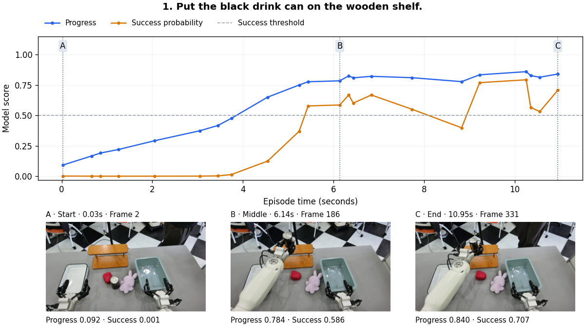
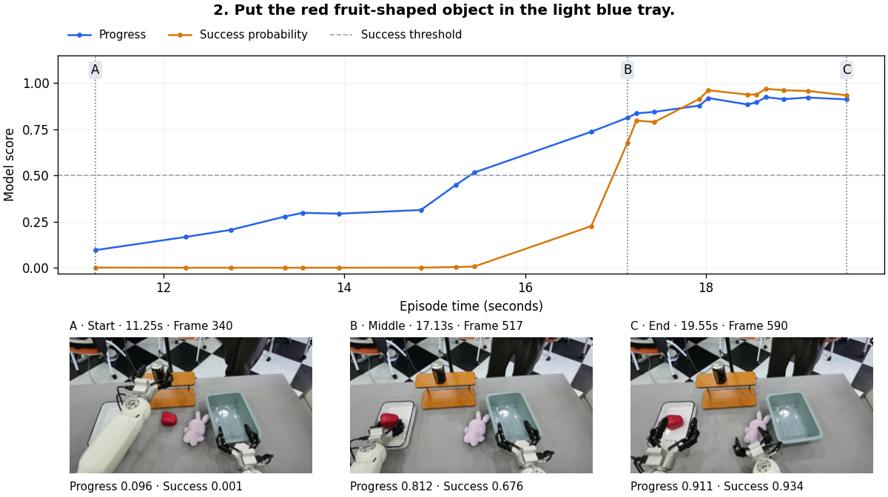

| Frame / time | Head camera | Instruction and review notes | Progress / success |
|---|---|---|---|
| 2 0.03s |  | Put the black drink can on the wooden shelf. | 0.092 / 0.001 |
| 21 0.66s |  | Put the black drink can on the wooden shelf. | 0.166 / 0.001 |
| 27 0.86s |  | Put the black drink can on the wooden shelf. | 0.191 / 0.000 |
| 39 1.26s |  | Put the black drink can on the wooden shelf. | 0.220 / 0.000 |
| 63 2.05s |  | Put the black drink can on the wooden shelf. | 0.292 / 0.000 |
| 93 3.05s |  | Put the black drink can on the wooden shelf. | 0.374 / 0.001 |
| 105 3.45s |  | Put the black drink can on the wooden shelf. | 0.417 / 0.003 |
| 114 3.75s |  | Put the black drink can on the wooden shelf. | 0.476 / 0.014 |
| 138 4.54s |  | Put the black drink can on the wooden shelf. | 0.650 / 0.124 |
| 159 5.24s |  | Put the black drink can on the wooden shelf. | 0.750 / 0.369 |
| 165 5.44s |  | Put the black drink can on the wooden shelf. | 0.777 / 0.578 |
| 186 6.14s |  | Put the black drink can on the wooden shelf. | 0.784 / 0.586 |
| 192 6.34s |  | Put the black drink can on the wooden shelf. | 0.825 / 0.668 |
| 195 6.44s |  | Put the black drink can on the wooden shelf. | 0.809 / 0.602 |
| 207 6.84s |  | Put the black drink can on the wooden shelf. | 0.822 / 0.668 |
| 234 7.73s |  | Put the black drink can on the wooden shelf. | 0.810 / 0.551 |
| 267 8.83s |  | Put the black drink can on the wooden shelf. | 0.778 / 0.398 |
| 279 9.23s |  | Put the black drink can on the wooden shelf. | 0.834 / 0.770 |
| 310 10.25s |  | Put the black drink can on the wooden shelf. | 0.860 / 0.793 |
| 313 10.35s |  | Put the black drink can on the wooden shelf. | 0.827 / 0.566 |
| 319 10.55s |  | Put the black drink can on the wooden shelf. | 0.814 / 0.531 |
| 331 10.95s |  | Put the black drink can on the wooden shelf. Task boundary: confirm release and next target in the original head/wrist images. | 0.840 / 0.707 |
| 340 11.25s |  | Put the red fruit-shaped object in the light blue tray. Task boundary: confirm release and next target in the original head/wrist images. | 0.096 / 0.001 |
| 370 12.25s |  | Put the red fruit-shaped object in the light blue tray. | 0.167 / 0.001 |
| 385 12.75s |  | Put the red fruit-shaped object in the light blue tray. | 0.205 / 0.000 |
| 403 13.34s |  | Put the red fruit-shaped object in the light blue tray. | 0.277 / 0.000 |
| 409 13.54s |  | Put the red fruit-shaped object in the light blue tray. | 0.298 / 0.000 |
| 421 13.94s |  | Put the red fruit-shaped object in the light blue tray. | 0.293 / 0.001 |
| 448 14.85s |  | Put the red fruit-shaped object in the light blue tray. | 0.313 / 0.001 |
| 460 15.24s |  | Put the red fruit-shaped object in the light blue tray. | 0.450 / 0.005 |
| 466 15.44s |  | Put the red fruit-shaped object in the light blue tray. | 0.515 / 0.007 |
| 505 16.73s |  | Put the red fruit-shaped object in the light blue tray. | 0.736 / 0.226 |
| 517 17.13s |  | Put the red fruit-shaped object in the light blue tray. | 0.812 / 0.676 |
| 520 17.23s |  | Put the red fruit-shaped object in the light blue tray. | 0.836 / 0.797 |
| 526 17.43s |  | Put the red fruit-shaped object in the light blue tray. | 0.844 / 0.789 |
| 541 17.93s |  | Put the red fruit-shaped object in the light blue tray. The red fruit is in the white tray, contrary to the configured fruit-to-blue rule. Corrective transfer remains unfinished. | 0.878 / 0.914 |
| 544 18.03s |  | Put the red fruit-shaped object in the light blue tray. The red fruit is in the white tray, contrary to the configured fruit-to-blue rule. Corrective transfer remains unfinished. | 0.919 / 0.961 |
| 557 18.46s |  | Put the red fruit-shaped object in the light blue tray. The red fruit is in the white tray, contrary to the configured fruit-to-blue rule. Corrective transfer remains unfinished. | 0.884 / 0.938 |
| 560 18.56s |  | Put the red fruit-shaped object in the light blue tray. The red fruit is in the white tray, contrary to the configured fruit-to-blue rule. Corrective transfer remains unfinished. | 0.896 / 0.938 |
| 563 18.66s |  | Put the red fruit-shaped object in the light blue tray. The red fruit is in the white tray, contrary to the configured fruit-to-blue rule. Corrective transfer remains unfinished. | 0.924 / 0.969 |
| 569 18.86s |  | Put the red fruit-shaped object in the light blue tray. The red fruit is in the white tray, contrary to the configured fruit-to-blue rule. Corrective transfer remains unfinished. | 0.912 / 0.961 |
| 577 19.13s |  | Put the red fruit-shaped object in the light blue tray. The red fruit is in the white tray, contrary to the configured fruit-to-blue rule. Corrective transfer remains unfinished. | 0.922 / 0.957 |
| 590 19.55s |  | Put the red fruit-shaped object in the light blue tray. Task boundary: confirm release and next target in the original head/wrist images.; The red fruit is in the white tray, contrary to the configured fruit-to-blue rule. Corrective transfer remains unfinished. | 0.911 / 0.934 |
| 599 19.85s |  | Put the lavender rabbit toy in the white tray. Task boundary: confirm release and next target in the original head/wrist images.; The red fruit is in the white tray, contrary to the configured fruit-to-blue rule. Corrective transfer remains unfinished. | 0.207 / 0.002 |
| 604 20.03s |  | Put the lavender rabbit toy in the white tray. The red fruit is in the white tray, contrary to the configured fruit-to-blue rule. Corrective transfer remains unfinished. | 0.346 / 0.001 |
| 614 20.35s |  | Put the lavender rabbit toy in the white tray. The red fruit is in the white tray, contrary to the configured fruit-to-blue rule. Corrective transfer remains unfinished. | 0.425 / 0.001 |
| 620 20.55s |  | Put the lavender rabbit toy in the white tray. The red fruit is in the white tray, contrary to the configured fruit-to-blue rule. Corrective transfer remains unfinished. | 0.473 / 0.001 |
| 653 21.65s |  | Put the lavender rabbit toy in the white tray. The red fruit is in the white tray, contrary to the configured fruit-to-blue rule. Corrective transfer remains unfinished. | 0.580 / 0.006 |
| 656 21.75s |  | Put the lavender rabbit toy in the white tray. The red fruit is in the white tray, contrary to the configured fruit-to-blue rule. Corrective transfer remains unfinished. | 0.669 / 0.021 |
| 659 21.85s |  | Put the lavender rabbit toy in the white tray. The red fruit is in the white tray, contrary to the configured fruit-to-blue rule. Corrective transfer remains unfinished. | 0.711 / 0.039 |
| 662 21.95s |  | Put the lavender rabbit toy in the white tray. The red fruit is in the white tray, contrary to the configured fruit-to-blue rule. Corrective transfer remains unfinished. | 0.699 / 0.176 |
| 665 22.05s |  | Put the lavender rabbit toy in the white tray. The red fruit is in the white tray, contrary to the configured fruit-to-blue rule. Corrective transfer remains unfinished.; The rabbit is in the light blue tray, contrary to the configured toys-to-white rule. Move it to the white tray. | 0.684 / 0.139 |
| 671 22.25s |  | Put the lavender rabbit toy in the white tray. The red fruit is in the white tray, contrary to the configured fruit-to-blue rule. Corrective transfer remains unfinished.; The rabbit is in the light blue tray, contrary to the configured toys-to-white rule. Move it to the white tray. | 0.660 / 0.167 |
| 686 22.75s |  | Put the lavender rabbit toy in the white tray. The red fruit is in the white tray, contrary to the configured fruit-to-blue rule. Corrective transfer remains unfinished.; The rabbit is in the light blue tray, contrary to the configured toys-to-white rule. Move it to the white tray. | 0.683 / 0.172 |
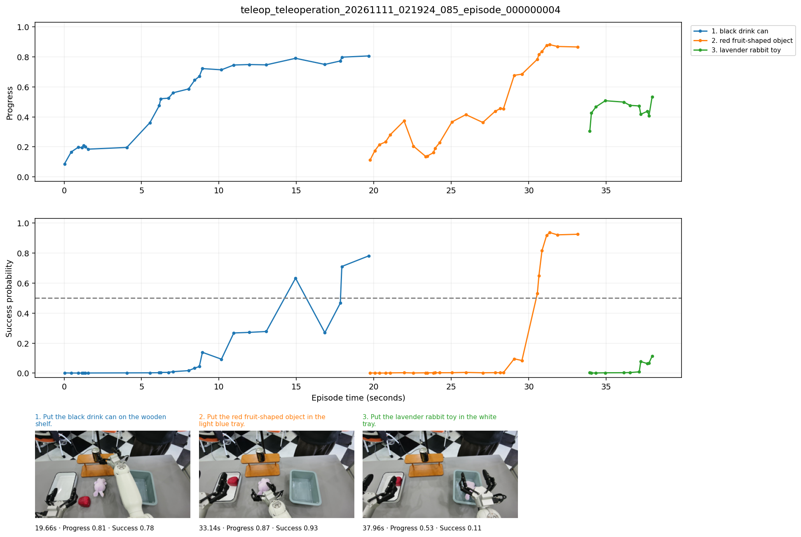
Each panel shows one instruction segment. Lettered markers on the plot match the selected head-camera images below it; the lines include every scored frame in that segment.

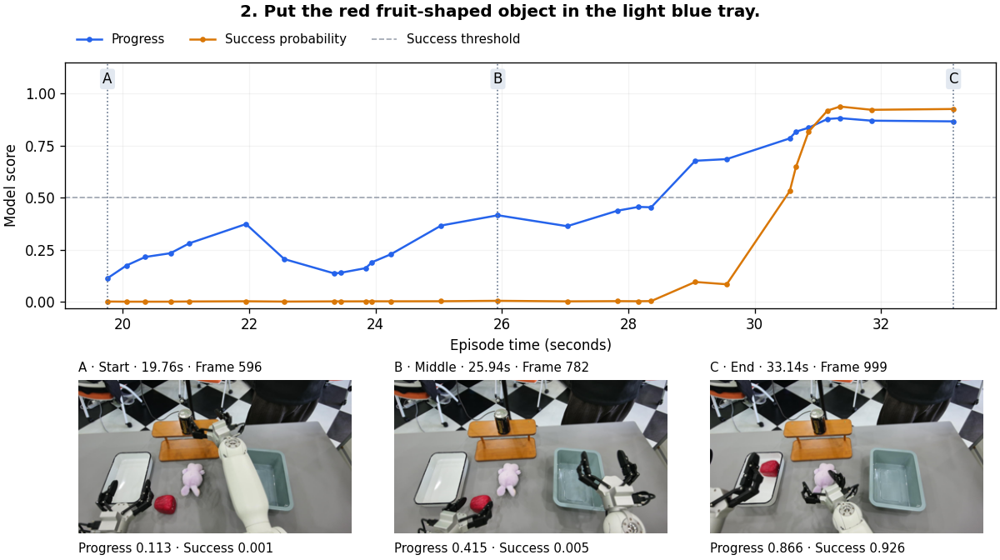
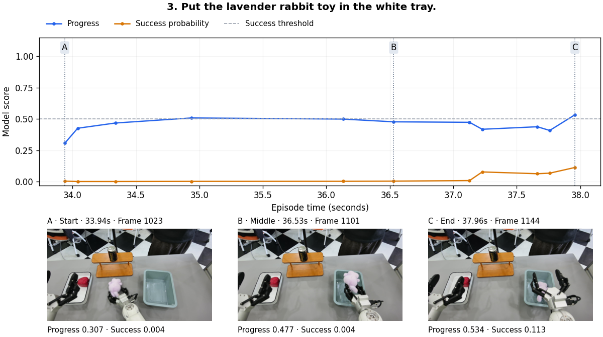
| Frame / time | Head camera | Instruction and review notes | Progress / success |
|---|---|---|---|
| 2 0.03s |  | Put the black drink can on the wooden shelf. | 0.087 / 0.001 |
| 15 0.46s |  | Put the black drink can on the wooden shelf. | 0.166 / 0.001 |
| 29 0.93s |  | Put the black drink can on the wooden shelf. | 0.199 / 0.000 |
| 36 1.16s |  | Put the black drink can on the wooden shelf. | 0.194 / 0.000 |
| 39 1.26s |  | Put the black drink can on the wooden shelf. | 0.210 / 0.001 |
| 42 1.36s |  | Put the black drink can on the wooden shelf. | 0.202 / 0.001 |
| 48 1.56s |  | Put the black drink can on the wooden shelf. | 0.185 / 0.001 |
| 123 4.05s |  | Put the black drink can on the wooden shelf. | 0.196 / 0.001 |
| 168 5.54s |  | Put the black drink can on the wooden shelf. | 0.362 / 0.002 |
| 186 6.14s |  | Put the black drink can on the wooden shelf. | 0.475 / 0.003 |
| 189 6.24s |  | Put the black drink can on the wooden shelf. | 0.521 / 0.005 |
| 204 6.74s |  | Put the black drink can on the wooden shelf. | 0.525 / 0.005 |
| 213 7.04s |  | Put the black drink can on the wooden shelf. | 0.561 / 0.010 |
| 243 8.03s |  | Put the black drink can on the wooden shelf. | 0.587 / 0.016 |
| 255 8.43s |  | Put the black drink can on the wooden shelf. | 0.645 / 0.033 |
| 264 8.73s |  | Put the black drink can on the wooden shelf. | 0.670 / 0.044 |
| 270 8.93s |  | Put the black drink can on the wooden shelf. | 0.722 / 0.139 |
| 307 10.16s |  | Put the black drink can on the wooden shelf. | 0.714 / 0.093 |
| 331 10.96s |  | Put the black drink can on the wooden shelf. | 0.746 / 0.268 |
| 361 11.95s |  | Put the black drink can on the wooden shelf. | 0.749 / 0.271 |
| 394 13.05s |  | Put the black drink can on the wooden shelf. | 0.747 / 0.277 |
| 451 14.94s |  | Put the black drink can on the wooden shelf. | 0.791 / 0.633 |
| 508 16.83s |  | Put the black drink can on the wooden shelf. | 0.750 / 0.270 |
| 538 17.83s |  | Put the black drink can on the wooden shelf. | 0.773 / 0.467 |
| 541 17.93s |  | Put the black drink can on the wooden shelf. | 0.798 / 0.711 |
| 593 19.66s |  | Put the black drink can on the wooden shelf. Task boundary: confirm release and next target in the original head/wrist images. | 0.807 / 0.781 |
| 596 19.76s |  | Put the red fruit-shaped object in the light blue tray. Task boundary: confirm release and next target in the original head/wrist images. | 0.113 / 0.001 |
| 605 20.06s |  | Put the red fruit-shaped object in the light blue tray. | 0.174 / 0.000 |
| 614 20.35s |  | Put the red fruit-shaped object in the light blue tray. | 0.215 / 0.000 |
| 626 20.75s |  | Put the red fruit-shaped object in the light blue tray. | 0.233 / 0.001 |
| 635 21.05s |  | Put the red fruit-shaped object in the light blue tray. | 0.281 / 0.001 |
| 662 21.95s |  | Put the red fruit-shaped object in the light blue tray. | 0.373 / 0.002 |
| 680 22.55s |  | Put the red fruit-shaped object in the light blue tray. | 0.205 / 0.001 |
| 704 23.34s |  | Put the red fruit-shaped object in the light blue tray. | 0.136 / 0.002 |
| 707 23.44s |  | Put the red fruit-shaped object in the light blue tray. | 0.139 / 0.002 |
| 719 23.84s |  | Put the red fruit-shaped object in the light blue tray. | 0.162 / 0.002 |
| 722 23.94s |  | Put the red fruit-shaped object in the light blue tray. | 0.190 / 0.002 |
| 731 24.24s |  | Put the red fruit-shaped object in the light blue tray. | 0.228 / 0.002 |
| 755 25.04s |  | Put the red fruit-shaped object in the light blue tray. | 0.366 / 0.003 |
| 782 25.94s |  | Put the red fruit-shaped object in the light blue tray. | 0.415 / 0.005 |
| 815 27.03s |  | Put the red fruit-shaped object in the light blue tray. | 0.363 / 0.002 |
| 839 27.83s |  | Put the red fruit-shaped object in the light blue tray. | 0.438 / 0.003 |
| 849 28.16s |  | Put the red fruit-shaped object in the light blue tray. | 0.456 / 0.002 |
| 855 28.36s |  | Put the red fruit-shaped object in the light blue tray. | 0.454 / 0.003 |
| 876 29.06s |  | Put the red fruit-shaped object in the light blue tray. | 0.677 / 0.095 |
| 891 29.56s |  | Put the red fruit-shaped object in the light blue tray. | 0.685 / 0.084 |
| 921 30.55s |  | Put the red fruit-shaped object in the light blue tray. | 0.785 / 0.531 |
| 924 30.65s |  | Put the red fruit-shaped object in the light blue tray. | 0.817 / 0.648 |
| 930 30.85s |  | Put the red fruit-shaped object in the light blue tray. The red fruit is in the white tray, contrary to the configured fruit-to-blue rule. Corrective transfer remains unfinished. | 0.836 / 0.816 |
| 939 31.15s |  | Put the red fruit-shaped object in the light blue tray. The red fruit is in the white tray, contrary to the configured fruit-to-blue rule. Corrective transfer remains unfinished. | 0.878 / 0.918 |
| 945 31.35s |  | Put the red fruit-shaped object in the light blue tray. The red fruit is in the white tray, contrary to the configured fruit-to-blue rule. Corrective transfer remains unfinished. | 0.882 / 0.938 |
| 960 31.85s |  | Put the red fruit-shaped object in the light blue tray. The red fruit is in the white tray, contrary to the configured fruit-to-blue rule. Corrective transfer remains unfinished. | 0.870 / 0.922 |
| 999 33.14s |  | Put the red fruit-shaped object in the light blue tray. Task boundary: confirm release and next target in the original head/wrist images.; The red fruit is in the white tray, contrary to the configured fruit-to-blue rule. Corrective transfer remains unfinished. | 0.866 / 0.926 |
| 1023 33.94s |  | Put the lavender rabbit toy in the white tray. Task boundary: confirm release and next target in the original head/wrist images.; The red fruit is in the white tray, contrary to the configured fruit-to-blue rule. Corrective transfer remains unfinished. | 0.307 / 0.004 |
| 1026 34.04s |  | Put the lavender rabbit toy in the white tray. The red fruit is in the white tray, contrary to the configured fruit-to-blue rule. Corrective transfer remains unfinished. | 0.426 / 0.001 |
| 1035 34.34s |  | Put the lavender rabbit toy in the white tray. The red fruit is in the white tray, contrary to the configured fruit-to-blue rule. Corrective transfer remains unfinished. | 0.468 / 0.001 |
| 1053 34.94s |  | Put the lavender rabbit toy in the white tray. The red fruit is in the white tray, contrary to the configured fruit-to-blue rule. Corrective transfer remains unfinished. | 0.508 / 0.002 |
| 1089 36.13s |  | Put the lavender rabbit toy in the white tray. The red fruit is in the white tray, contrary to the configured fruit-to-blue rule. Corrective transfer remains unfinished. | 0.499 / 0.003 |
| 1101 36.53s |  | Put the lavender rabbit toy in the white tray. The red fruit is in the white tray, contrary to the configured fruit-to-blue rule. Corrective transfer remains unfinished. | 0.477 / 0.004 |
| 1119 37.13s |  | Put the lavender rabbit toy in the white tray. The red fruit is in the white tray, contrary to the configured fruit-to-blue rule. Corrective transfer remains unfinished. | 0.473 / 0.008 |
| 1122 37.23s |  | Put the lavender rabbit toy in the white tray. The red fruit is in the white tray, contrary to the configured fruit-to-blue rule. Corrective transfer remains unfinished.; The rabbit is in the light blue tray, contrary to the configured toys-to-white rule. Move it to the white tray. | 0.418 / 0.077 |
| 1135 37.66s |  | Put the lavender rabbit toy in the white tray. The red fruit is in the white tray, contrary to the configured fruit-to-blue rule. Corrective transfer remains unfinished.; The rabbit is in the light blue tray, contrary to the configured toys-to-white rule. Move it to the white tray. | 0.438 / 0.063 |
| 1138 37.76s |  | Put the lavender rabbit toy in the white tray. The red fruit is in the white tray, contrary to the configured fruit-to-blue rule. Corrective transfer remains unfinished.; The rabbit is in the light blue tray, contrary to the configured toys-to-white rule. Move it to the white tray. | 0.408 / 0.067 |
| 1144 37.96s |  | Put the lavender rabbit toy in the white tray. The red fruit is in the white tray, contrary to the configured fruit-to-blue rule. Corrective transfer remains unfinished.; The rabbit is in the light blue tray, contrary to the configured toys-to-white rule. Move it to the white tray. | 0.534 / 0.113 |
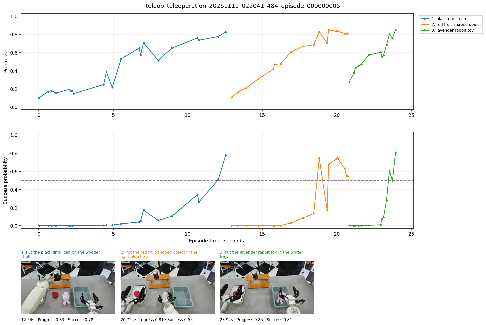
Each panel shows one instruction segment. Lettered markers on the plot match the selected head-camera images below it; the lines include every scored frame in that segment.
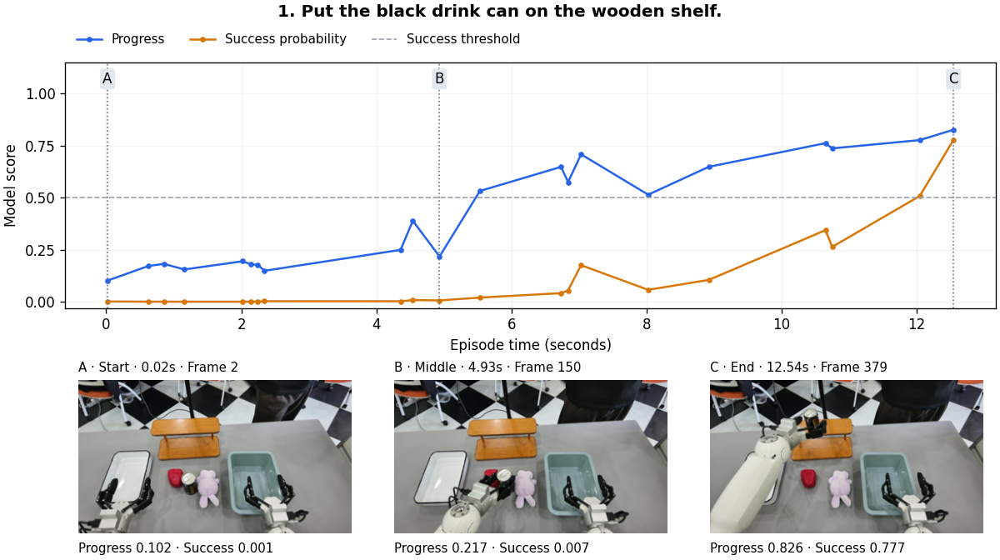
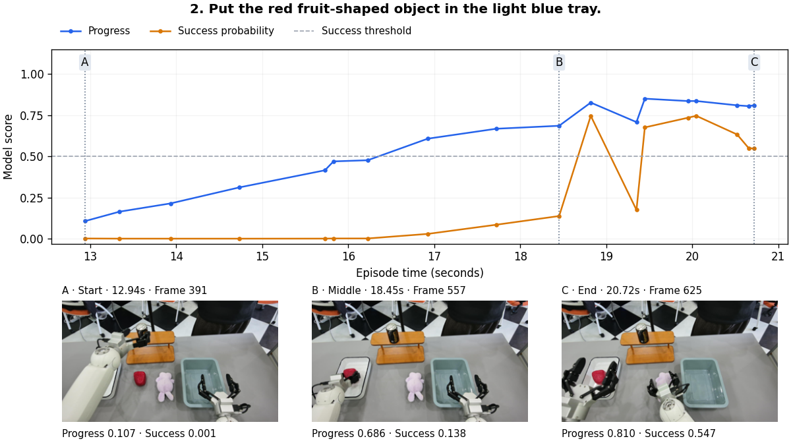
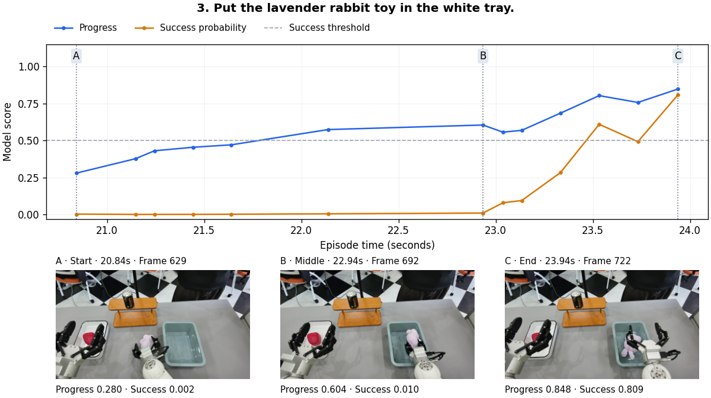
| Frame / time | Head camera | Instruction and review notes | Progress / success |
|---|---|---|---|
| 2 0.02s |  | Put the black drink can on the wooden shelf. | 0.102 / 0.001 |
| 20 0.63s |  | Put the black drink can on the wooden shelf. | 0.172 / 0.001 |
| 27 0.85s |  | Put the black drink can on the wooden shelf. | 0.182 / 0.000 |
| 36 1.16s |  | Put the black drink can on the wooden shelf. | 0.155 / 0.000 |
| 62 2.02s |  | Put the black drink can on the wooden shelf. | 0.195 / 0.000 |
| 66 2.15s |  | Put the black drink can on the wooden shelf. | 0.179 / 0.001 |
| 69 2.24s |  | Put the black drink can on the wooden shelf. | 0.178 / 0.001 |
| 72 2.34s |  | Put the black drink can on the wooden shelf. | 0.149 / 0.003 |
| 132 4.36s |  | Put the black drink can on the wooden shelf. | 0.249 / 0.002 |
| 138 4.54s |  | Put the black drink can on the wooden shelf. | 0.389 / 0.008 |
| 150 4.93s |  | Put the black drink can on the wooden shelf. | 0.217 / 0.007 |
| 168 5.53s |  | Put the black drink can on the wooden shelf. | 0.532 / 0.020 |
| 204 6.73s |  | Put the black drink can on the wooden shelf. | 0.648 / 0.042 |
| 207 6.84s |  | Put the black drink can on the wooden shelf. | 0.575 / 0.054 |
| 213 7.03s |  | Put the black drink can on the wooden shelf. | 0.708 / 0.176 |
| 243 8.02s |  | Put the black drink can on the wooden shelf. | 0.514 / 0.057 |
| 270 8.92s |  | Put the black drink can on the wooden shelf. | 0.648 / 0.105 |
| 322 10.65s |  | Put the black drink can on the wooden shelf. | 0.762 / 0.344 |
| 325 10.75s |  | Put the black drink can on the wooden shelf. | 0.737 / 0.264 |
| 364 12.04s |  | Put the black drink can on the wooden shelf. | 0.776 / 0.508 |
| 379 12.54s |  | Put the black drink can on the wooden shelf. Task boundary: confirm release and next target in the original head/wrist images. | 0.826 / 0.777 |
| 391 12.94s |  | Put the red fruit-shaped object in the light blue tray. Task boundary: confirm release and next target in the original head/wrist images. | 0.107 / 0.001 |
| 403 13.34s |  | Put the red fruit-shaped object in the light blue tray. | 0.164 / 0.001 |
| 421 13.94s |  | Put the red fruit-shaped object in the light blue tray. | 0.215 / 0.000 |
| 445 14.73s |  | Put the red fruit-shaped object in the light blue tray. | 0.311 / 0.000 |
| 475 15.73s |  | Put the red fruit-shaped object in the light blue tray. | 0.415 / 0.001 |
| 478 15.83s |  | Put the red fruit-shaped object in the light blue tray. | 0.469 / 0.002 |
| 490 16.23s |  | Put the red fruit-shaped object in the light blue tray. | 0.476 / 0.002 |
| 511 16.92s |  | Put the red fruit-shaped object in the light blue tray. | 0.607 / 0.029 |
| 535 17.72s |  | Put the red fruit-shaped object in the light blue tray. | 0.668 / 0.085 |
| 557 18.45s |  | Put the red fruit-shaped object in the light blue tray. | 0.686 / 0.138 |
| 568 18.82s |  | Put the red fruit-shaped object in the light blue tray. | 0.826 / 0.746 |
| 584 19.35s |  | Put the red fruit-shaped object in the light blue tray. The red fruit is in the white tray, contrary to the configured fruit-to-blue rule. Corrective transfer remains unfinished. | 0.708 / 0.175 |
| 587 19.45s |  | Put the red fruit-shaped object in the light blue tray. The red fruit is in the white tray, contrary to the configured fruit-to-blue rule. Corrective transfer remains unfinished. | 0.850 / 0.676 |
| 602 19.95s |  | Put the red fruit-shaped object in the light blue tray. The red fruit is in the white tray, contrary to the configured fruit-to-blue rule. Corrective transfer remains unfinished. | 0.836 / 0.734 |
| 605 20.05s |  | Put the red fruit-shaped object in the light blue tray. The red fruit is in the white tray, contrary to the configured fruit-to-blue rule. Corrective transfer remains unfinished. | 0.836 / 0.746 |
| 619 20.52s |  | Put the red fruit-shaped object in the light blue tray. The red fruit is in the white tray, contrary to the configured fruit-to-blue rule. Corrective transfer remains unfinished. | 0.810 / 0.633 |
| 623 20.65s |  | Put the red fruit-shaped object in the light blue tray. The red fruit is in the white tray, contrary to the configured fruit-to-blue rule. Corrective transfer remains unfinished. | 0.805 / 0.551 |
| 625 20.72s |  | Put the red fruit-shaped object in the light blue tray. Task boundary: confirm release and next target in the original head/wrist images.; The red fruit is in the white tray, contrary to the configured fruit-to-blue rule. Corrective transfer remains unfinished. | 0.810 / 0.547 |
| 629 20.84s |  | Put the lavender rabbit toy in the white tray. Task boundary: confirm release and next target in the original head/wrist images.; The red fruit is in the white tray, contrary to the configured fruit-to-blue rule. Corrective transfer remains unfinished. | 0.280 / 0.002 |
| 638 21.15s |  | Put the lavender rabbit toy in the white tray. The red fruit is in the white tray, contrary to the configured fruit-to-blue rule. Corrective transfer remains unfinished. | 0.377 / 0.001 |
| 641 21.24s |  | Put the lavender rabbit toy in the white tray. The red fruit is in the white tray, contrary to the configured fruit-to-blue rule. Corrective transfer remains unfinished. | 0.430 / 0.001 |
| 647 21.44s |  | Put the lavender rabbit toy in the white tray. The red fruit is in the white tray, contrary to the configured fruit-to-blue rule. Corrective transfer remains unfinished. | 0.454 / 0.001 |
| 653 21.64s |  | Put the lavender rabbit toy in the white tray. The red fruit is in the white tray, contrary to the configured fruit-to-blue rule. Corrective transfer remains unfinished. | 0.471 / 0.001 |
| 668 22.14s |  | Put the lavender rabbit toy in the white tray. The red fruit is in the white tray, contrary to the configured fruit-to-blue rule. Corrective transfer remains unfinished. | 0.574 / 0.004 |
| 692 22.94s |  | Put the lavender rabbit toy in the white tray. The red fruit is in the white tray, contrary to the configured fruit-to-blue rule. Corrective transfer remains unfinished. | 0.604 / 0.010 |
| 695 23.04s |  | Put the lavender rabbit toy in the white tray. The red fruit is in the white tray, contrary to the configured fruit-to-blue rule. Corrective transfer remains unfinished. | 0.556 / 0.079 |
| 698 23.13s |  | Put the lavender rabbit toy in the white tray. The red fruit is in the white tray, contrary to the configured fruit-to-blue rule. Corrective transfer remains unfinished. | 0.569 / 0.094 |
| 704 23.33s |  | Put the lavender rabbit toy in the white tray. The red fruit is in the white tray, contrary to the configured fruit-to-blue rule. Corrective transfer remains unfinished. | 0.685 / 0.283 |
| 710 23.53s |  | Put the lavender rabbit toy in the white tray. The red fruit is in the white tray, contrary to the configured fruit-to-blue rule. Corrective transfer remains unfinished.; The rabbit is in the light blue tray, contrary to the configured toys-to-white rule. Move it to the white tray. | 0.803 / 0.609 |
| 716 23.73s |  | Put the lavender rabbit toy in the white tray. The red fruit is in the white tray, contrary to the configured fruit-to-blue rule. Corrective transfer remains unfinished.; The rabbit is in the light blue tray, contrary to the configured toys-to-white rule. Move it to the white tray. | 0.757 / 0.492 |
| 722 23.94s |  | Put the lavender rabbit toy in the white tray. The red fruit is in the white tray, contrary to the configured fruit-to-blue rule. Corrective transfer remains unfinished.; The rabbit is in the light blue tray, contrary to the configured toys-to-white rule. Move it to the white tray. | 0.848 / 0.809 |